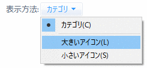

- 高速だとのウワサを信用して秀丸エディタを試用していますが、 カーソルの移動速度がとても遅く、「メモ帳」程度のスピードなんです。秀丸エディタの速さって、こんなものなんですか？

Windowsと秀丸エディタで、次の２つの設定を確認してください。
Windows側の設定
「コントロールパネル」の「キーボード」で設定を行いますが、 Windowsの種類によって、コントロールパネルを開く手順が異なります。
- Windows 7
- スタートメニューを開くと「コントロールパネル」があるので、選択します。
- Windows 8.1
- 「チャーム」を表示させ「設定」から「コントロールパネル」を選択します。
- Windows 10
- スタートメニューから、「Windows システムツール」にある「コントロールパネル」を選択します。
「コントロールパネル」を開いても、「キーボード」がない場合は、「表示方法」を「カテゴリ」から 「大きいアイコン」に変更してください。

「キーボード」をダブルクリックし「キーボードのプロパティ」ダイアログボックスを表示します。 ここで、「表示までの待ち時間」を「短く」し、「表示の間隔」を「速く」するように設定してください。
秀丸エディタ側の設定
「その他」→「動作環境」→「表示操作」→「カーソル操作」にある「カーソル移動の加速」をチェックします。 導入直後のデフォルト状態では未チェックになっているので、一度調べてみてください。 ここがチェックされていないと、カーソルの移動速度はたいへん遅くなります。続けて「リピート間隔」と「開始時間」をひとまず最短（左端）に設定してカーソルの動きを調べ、 各自の環境にマッチする設定を見つけてください。
なお、同じ場所にある「カーソルでスクロールする行数」は、とりあえず、「2行ずつ」にしておき、調整するようにします。